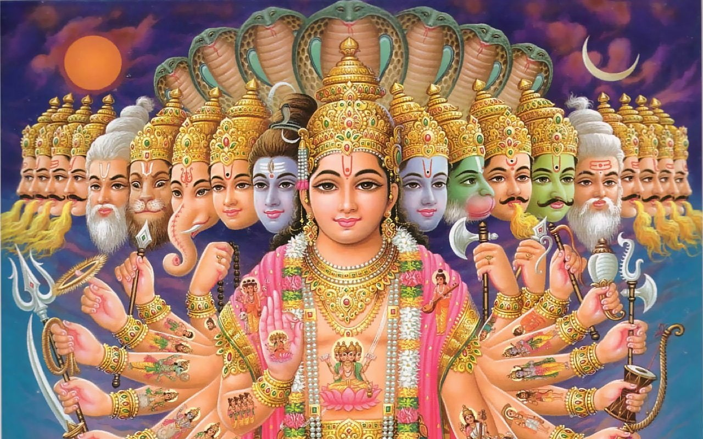
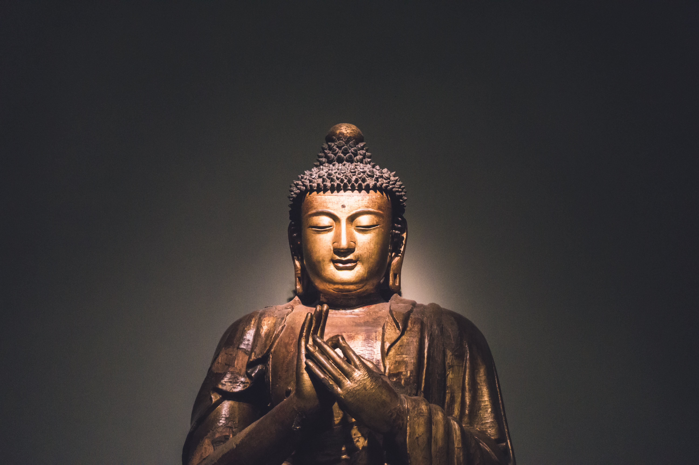

Islam

Agama Islam pertama kali lahir di negara Arab, dimana kedatanganya diawali dengan kelahiran Nabi
Muhammad SAW. Nabi Muhammad SAW adalah nabi akhir zaman dan diangkat oleh Allah SWT menjadi rasul.
Setelah itu, Nabi Muhammad SAW pun menyebarkan Islam kepada seluruh kaum Arab. Nabu Muhammad SAW
lahir
di Mekkah pada 12 Rabi'ul Awal Tahun Gajah, atau pada tanggal 20 April 571. Beliau adalah seorang
yatim
piatu dengan ayahnya bernama Abdulla bin Abu Muthalib yang wafat saat berdagang. Sedangkan ibunya
bernama Aminah binti Wahab yang meninggal saat beliau berusia 7 tahun.
Pada usia 40 tahun, Nabi Muhammad sering menyendiri dan bertafakur di Gua Hira. Hingga pada akhirnya
pada 17 Ramadhan 11 SH atau 6 Agustus 611, beliau dikunjungi oleh Malaikat Jibril yang dating untuk
menyampaikan wahyu pertama dari Allah SWT kepada beliau “Bacalah dengan (menyebut) nama Tuhanmu Yang
Menciptakan …” (QS. 96:1-5). Dengan turunnya wahyu tersebut, Nabi Muhammad SAW dipilih sebagai rasul
oleh Allan SWT.
kristen
Agama kristen muncul di wilayah Levant atau yang sekarang dikenal sebagai Palestina dan Israel sejak
pertengahan abad masehi pertama. Awal sejarah terbentuknya agama Kristen dimulai di kota Yerusalem
lalu menyebar ke wilayah Timur dekat seperti Syria, Asyur, Mesopotamia, Fenisia, Asia Minor,
Yordania dan Mesir. 15 tahun kemudian agama kristen mulai masuk dan berkembang di Eropa
Selatan.penyebaran agama kristen juga dilaukan di Afrika Utara, Asia Selatan dan Eropa Timur. Hingga
pada abad ke 4 kristen dijadian agama negara oleh Dinasti Arsakid dari Armenia di tahun 301 M, oleh
negara Caucasian Iberia (Republik Georgia) pada 319 M, Kekaisaran Aksum dari Ethiopia pada 325 M dan
kekaisaran Romawi pada 380 M.
Hindu

Asal usul agama hindu dimulai dari masuknya bangsa arya ke india sejak tahun 1500 SM. Dari masuknya
agama arya ke Indonesia membawa perubahan besar dalam tata kehidupan masyarakat di india.perubahan
terjadi karena bangsa arya mengadakan integrasi kebudayaan dengan bangsa Dravida sehingga dari situ
lahirlah agama hindu.
Selain itu bangsa arya juga menulis kitab-kitab weda sebagai keyakinan dan kepercayaan dari agama
hindu, misalnya kitab suci seperti Reg Weda,Sama Weda,Yayur Weda dan Atharwa Weda.
Buddha

Agama Buddha diketahui berdasarkan penelitian ilmiah yang dilakukan para ilmuwan dengan memanfaatkan
berbagai objek pengamatan seperti peninggalan sejarah, cerita-cerita kuno, dan apa yang tertulis
dalam berbagai kitab masa lampau. Dari penelitian tersebut diketahui bahwa agama Buddha terlahir di
abad ke-6 SM di Nepal. Orang yang menjadi pencetusnya adalah seorang ksatria bernama Siddharta
Gautama. Agama ini muncul dari perpaduan berbagai kebudayaan seperti kebudayaan helinistik (Yunani),
kebudayaan Asia Tengah, Asia Timur, dan Asia Tenggara. Agama ini juga muncul karena adanya reaksi
terhadap hadirnya agama Hindu yang muncul lebih awal.
Khonghucu
Agama Khonghucu, tepatnya disebut Ru Jiao, sudah ada 2000 tahun sebelum Nabi Khongcu lahir. Para
raja dan rakyat harus menjalankan upacara agama dan menjunjung tinggi moralitas seperti yang
diajarkan oleh para luhur raja. Nabi Khongcu lahir pada tahun 551 SM. Ia ditugaskan oleh Tuhan untuk
menata kembali tata upacara agama Ru Jiao dan mengajarkan kepada raja dan rakyat Tiongkok tentang
spiritual dan moral agar rakyat Tiongkok hidup lebih sejahtera dan damai. Pada waktu itu di Tiongkok
terjadi perpecahan yang menjadikan negeri Tiongkok kacau balau. Para kepala daerah ingin menjadi
raja, mereka saling berperang berebut wilayah. Zaman itu disebut zaman Chun Qiu ( Musim Semi dan
Musim Gugur).